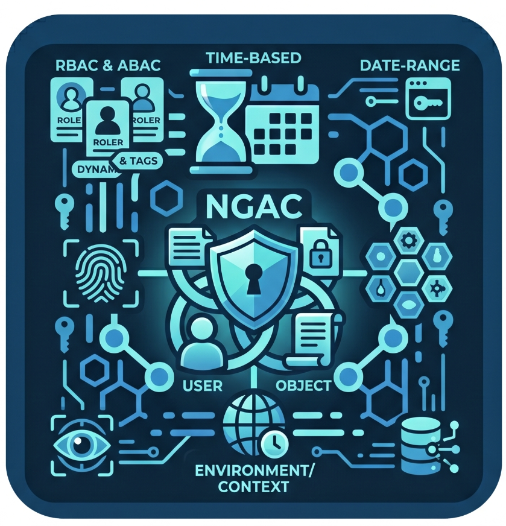
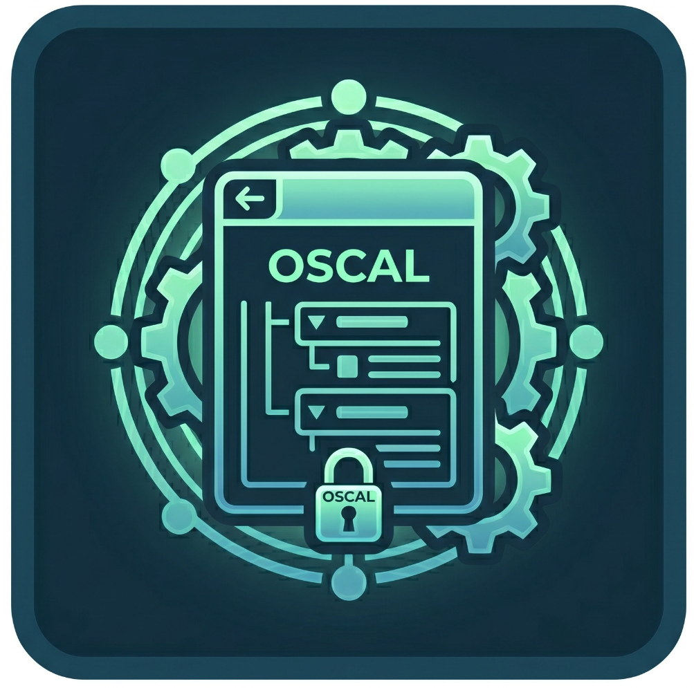

Explore these resources to discover more about BloSS@M and how it’s transforming software asset management.
Business Layer
Explore how BloSS@M's business layer enables discovery, tracking, exchange, and reporting of software assets across government agencies.
SWID Tag
Explore how Software Identification (SWID) tags provide standardized identification of software components for improved asset management and vulnerability tracking.
Asset Security
Discover how BloSS@M's asset security capabilities help identify, assess, and mitigate risks across your software inventory.
ATO Layer
Explore how BloSS@M's ATO layer enables automated security assessments, continuous monitoring, and compliance management using OSCAL standards.

Next Generation Access Control (NGAC)
Discover fine-grained access control implementations for precise permission management across your software ecosystem.
Onboarding Process
Learn about BloSS@M's member onboarding process, including documentation, training, and integration steps for new participants.

OSCAL
Explore how BloSS@M leverages OSCAL standards for automated compliance, security assessment, and continuous monitoring.
Blossom Internal Report
Access detailed technical reports, insights, and development progress updates for BloSS@M platform.
Use Cases
See real-world examples of how organizations implement BloSS@M to solve complex software asset management challenges.